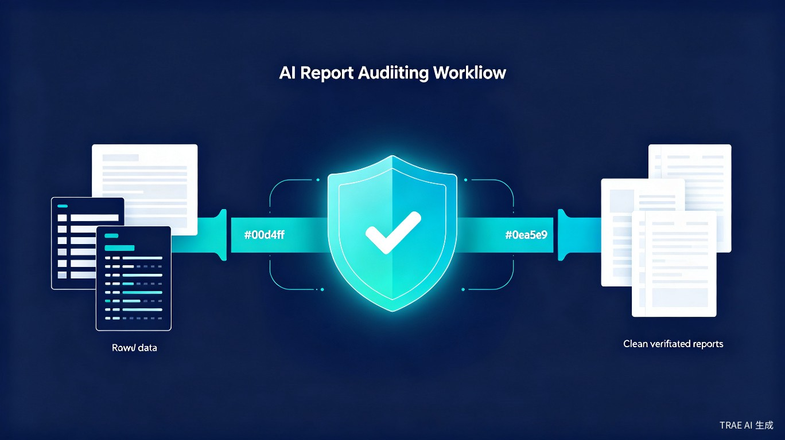
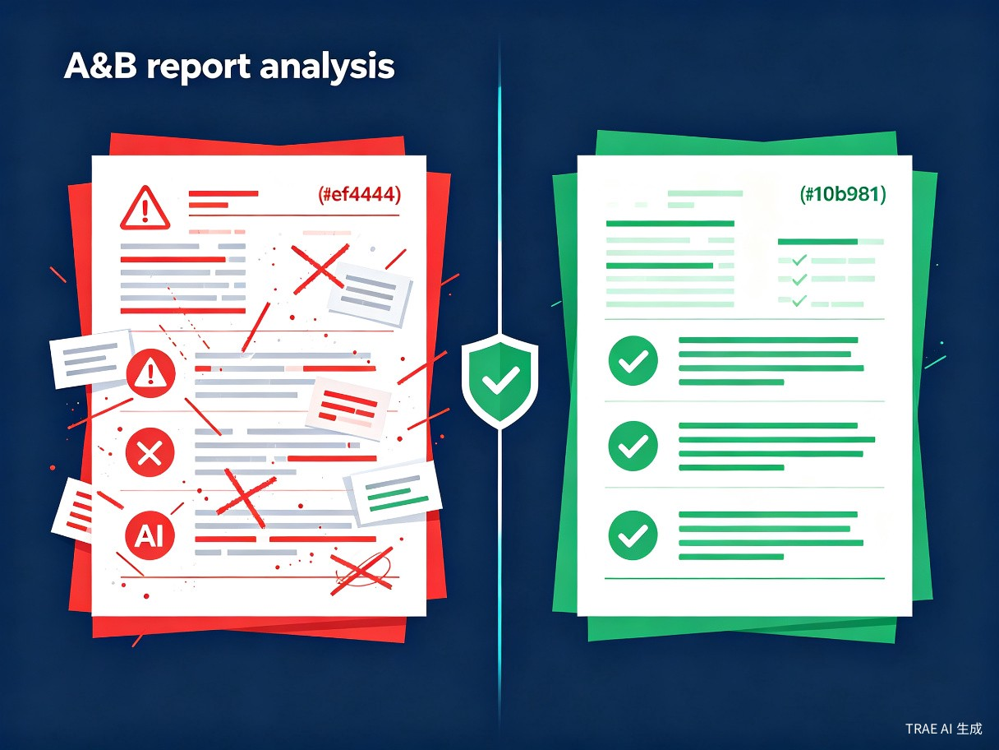

给 AI 报告加一层可审计规则控制层
不改模型，只加规则——让 AI 在网络流量、财务报表等高风险专业场景里，输出可验证、可追溯、可复核的报告。
普通 AI 报告看起来流畅专业，但在高风险领域，它们可能悄悄违反协议规则、物理边界约束或会计勾稽关系。专业人员不得不花费大量时间逐行人工复核。
裸模型可能生成 UDP 报文携带 TCP Flags、端口超出合法范围等违反网络协议定义的输出。
Bytes/Packets 等数值可能超出物理约束（如 MTU 上限），导致报告在技术上不可行。
资产负债表不平、利润表与现金流量表数据矛盾——AI 幻觉在财务场景中尤为危险。
专业人员需要逐条核对报告中的每一个数值、每一条规则，效率低下且容易遗漏。
每次生成报告都需要重新定义验证逻辑，缺乏统一的规则管理和复用机制。
AI 输出缺乏规则依据和校验日志，无法满足企业内控和外部审计的合规要求。
面向所有需要生成和审核专业报告的团队，尤其在合规敏感领域。
从数据源到可审计报告，全流程规则驱动，每一步都有迹可循。
上传或选择已有数据源，支持 CSV、JSON、NetFlow 等多种格式
→系统自动从数据中提取领域规则，或加载预定义规则模板
→将规则转化为业务可读的规则卡片，支持人工审核与编辑
→上传新资料，系统自动对照规则卡进行逐条核查
→输出详细的违规条目列表，标注违反的具体规则和严重程度
→对比裸模型输出与规则约束输出，直观展示规则修正效果
→导出附带规则依据、校验日志的可审计报告，满足合规需求

同一份输入，两条生成路径。A 轨是裸模型的原始输出，B 轨经过规则核查、投影修正和槽位回填。
模型直接生成，输出流畅但可能包含领域规则违反。专业人员需要逐条人工复核。
先核查、再投影修正、最后槽位回填。每条数据都有规则依据和校验日志。

覆盖网络安全、财务审计和可视化协作三大核心场景，展示规则约束在不同领域的实际效果。
基于 CIDDS/NetFlow 数据集，自动发现网络协议规则，生成规则卡，并对新资料进行合规核查。
使用财务训练数据和错误注入资料包，演示勾稽核查、数值修正和 A/B 报告对比全流程。
多智能体协作办公室，用可视化方式展示数据上传、规则学习、核查和报告生成的完整流程。
NetNomos Forge 不只是一个工具，而是一套可复用、可扩展的 AI 报告治理方法论。
自动规则核查替代人工逐条复核，报告生成效率提升数倍。
规则约束层在输出前拦截领域错误，从源头减少幻觉。
每条输出附带规则依据和校验日志，满足内控与外部审计需求。
规则模板化设计，可从网络安全扩展到财务、医疗、法律等更多行业。